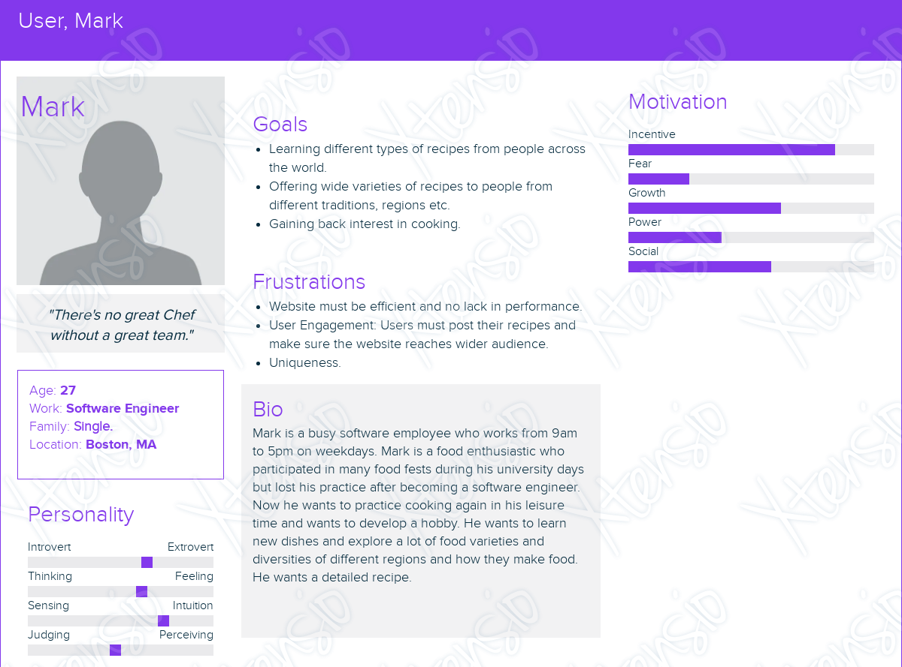
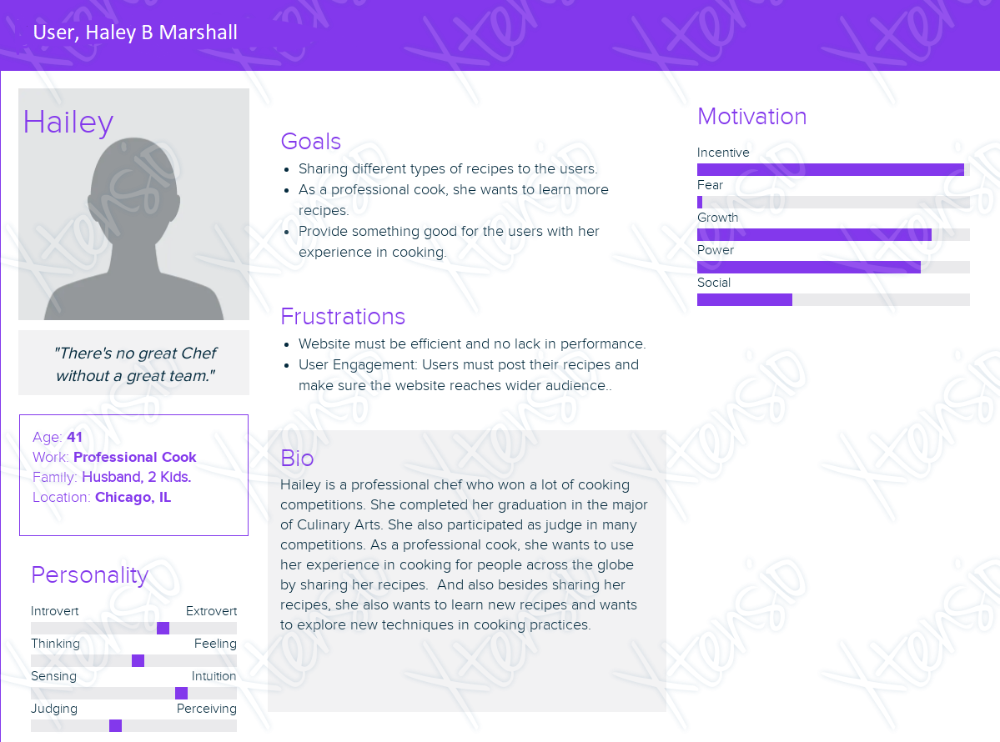

User Analysis
For Mark, as a user, he wants to learn and explore different varieties of recipes. Through this practice, he also wants to gain his lost interest in cooking back. To gain his interest back, we need to make sure that the website reaches a wide section of the audience so that the website is engaged all the time so that the users can help each other out. And also the website must be designed in a creative way so that he will engage himself in this website.

For Hailey, as a user and also as a professional cook, she wants to share her recipes with other users and learn different recipes from the other users. Even for this, the website's engagement is very important and also reviewing the posted recipes by different users will also help them in improving their cooking styles. As Hailey participated as a judge in many competitions, review system in the website is also very important.

Task Analysis
Task 1: To register or login to the website
Goal: The user wants to register or login to access their account
Subtasks:
1.1. Enter Email Address.
1.2. Enter Name.
1.3. Enter Password.
1.4. Click on register/login button.
Task 2: Search for a Recipe
Goal: The user wants to find a specific recipe or explore recipes based on certain criteria.
Subtasks:
2.1. Navigate to the RecipeSearch page.
2.2. Enter search criteria.
2.2.1. Type keywords, ingredients, cuisine, dietary restrictions, or cooking time in the search bar.
2.2.2. Apply filters (e.g. vegetarian, gluten-free, under 30 minutes, breakfast, lunch, dinner) if desired.
2.3. Browse search results.
2.4. View recipe details.
2.5. Save or bookmark a recipe.
Task 3: Upload a Recipe
Goal: The user wants to share a recipe with the RecipeShare community.
Subtasks:
3.1. Create a new recipe.
3.1.1. Navigate to the user's profile.
3.1.2. Click on "Create New Recipe".
3.2. Fill in recipe details.
3.2.1. Enter a title, list of ingredients, and step-by-step instructions.
3.2.2. Provide additional information like cooking time, difficulty level, and tips.
3.3. Add a photo (optional).
3.4. Preview the recipe.
3.5. Publish the recipe.
Task 4: Modify a Recipe.
Goal: The user wants to modify a recipe to suit their preferences or dietary restrictions.
Subtasks:
4.1. Access saved recipes.
4.1.1. Navigate to the user's profile.
4.1.2. Click on "Saved Recipes".
4.2. Select a recipe to edit.
4.3. Make changes to the recipe.
4.4. Save the modified recipe.
Task 5: Sharing a Recipe
Goal: The user wants to share a recipe on any social media platform.
Subtasks:
5.1. Click on share button.
5.2. Select the social media platform (e.g. Instagram, Facebook, Whatsapp).
Task 6: Providing rating and feedback to recipes
Goal: The user wants to give ratings, feedback or ask questions about a specific recipe.
Subtasks:
6.1 Locate the recipe to provide feedback
6.2 Give rating from 5 stars
6.3 Access the comments section
6.4 Write a comment or question
6.5 Submit the comment
Domain Analysis